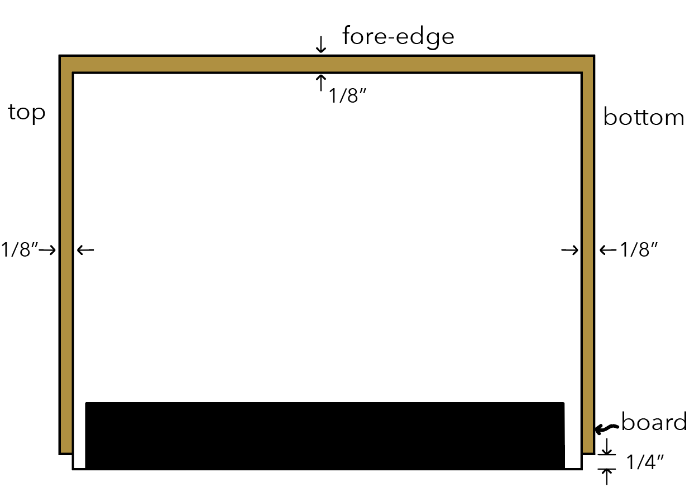

Preparing the Endpapers
1. Cut two white sheets and two coloured sheets of paper so that, when folded, they are about 1/2" longer and wider than the book.
2. Insert them one inside the other, as shown so that the white is on the outside, then two coloured sheets, and then the last white on the inside of the coloured ones.
3. Trim one end of the endpapers square with the back fold and mark this true corner with a pencil.
4. Remove the old sewing thread or metal clips from the book to be bound.
5. Insert the book into the centre of the endpapers.
6. Cut a strip of linen or scrap cloth 2" wide and 1/2" shorter than the book's length.
7. Brush a thin coating of paste or glue onto the linen.
8. Place the linen strip, glued side up, on a piece of waste paper.
9. Place the back fold of the book on the linen so that 1" of the linen is covered and press down. Lift the waste paper and draw the remainder of the linen over the book and rub it down. Remove the waste paper and let the glue dry.
Marking-Up for Sewing
10. Mark the spine 1" from the top, 1" from the bottom, and a third mark in the centre. Divide the remaining spaces between them into spaces 1" ty 1 1/2". These will be the stitching points.
11. Make holes with an awl at these points so the needle can enter.
Sewing a Single-Sectioned Book
12. Start threading a needle from the inside of the book. The figure below shows the threading method for a three and five hole book. Push the needle from the inside out hole 1, leaving a tail about 3" long, and thread as shown. Tie the stitches together and trim the excess thread, leaving about 3/8" extra.
13. Press the book for a while with a book press or a flat heavy object.
Marking Out for Cutting the Fore-Edge
14. Make a mark on the top and bottom of the book at equal distances from the fold..
Cutting the Edges
15. If the book is thin, you can trim it with a straight-edged knife, but thicker books need to be cut with a plough or paper-cutter. Make sure the blade is very sharp.
Preparing the Boards
16. Cut two 1 lb. boards about 1/4" longer and 1/8" narrower than the book.
Attaching the Boards to the Book
17. Spread glue on one side of one board. Lay the book down carefully on the board with 1/8" of the board projecting from the top, bottom, and fore-edge of the book. Press the book firmly onto the board.
18. Repeat the process for the second board.
Cutting Patterns for the Cloth Back and Corners
19. It is up to you how big the cloth parts are. It is suggested that the cloth back cover one fifth of the width of the book. Allow 5/8" extra to allow for folding over the edges.
20. Cut a cloth back and four corners from a sheet of book cloth. The corners can be cut from squares or a strip as shown.
21. Draw pencil lines on the back of the cloth along with the overlaps as shown.
22. Cut away the point of each corner piece, leaving slightly more than the thickness of the board so that it can wrap around the edge.
23. Glue the corners and place them on the board according to the pencil marks. Fold over the tiny overlap first then fold the top/bottom first then the fore-edge corner in.
Covering the Back
24. Spread glue on the back cloth and place the edge of the book exactly in the centre. Lower the book on to one side of the cloth and lift the other side of the cloth over the book as shown. Rub the cloth from the spine outwards.
25. Open both boards and place a piece of scrap paper on the cloth projecting from the bottom and stand the book upright.
26. Pull the cloth over the edge of the boards and cut down the center of the cloth and glue down inside the covers. Repeat with the other side.
Preparing the Sides
27. Make small marks on the cloth back and corners to indicate the position of the paper sides, which should overlap the cloth by 1/8". Do this by measuring from the fore-edge with a ruler, marking the distances labeled S below. Make measuremwnts marked C below.
28. Cut two sheets of paper to cover the boards and overlap the top and bottom by 5/8" and 5/8" over the fore-edge.
29. Place the cover paper on the book and fold back from the corners along the marks previously made then cut them at the fold.
30. spread glue on the cover paper and place it on the board and wrap it inside.
Pasting Down the Endpapers
31. Open the cover and place a piece of scrap paper under the endpaper. Spread glue on the endpaper, working outwards as the arrows show. Cover completely. Remove the scrap paper and shut the cover board onto the glued paper and press. Keep closed with a new piece of scrap paper under the endpaper. Repeat with the other side.
32. Remove the scrap papers and leave the book closed overnight with something heavy on top.